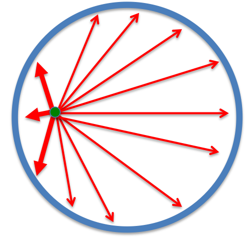

Shell theorem
So far we have been dealing with point masses. In reality, however, planets are not exactly points.
Shell theorem is, however, a great excuse for people to use point masses as representing objects in space.
Specifically, it states that:
Shell theorem
- A spherically symmetric body affects external objects gravitationally as though all of its mass were concentrated at a point at its center.
- If the body is a spherically symmetric shell (i.e., a hollow ball), no net gravitational force is exerted by the shell on any object inside, regardless of the object's location within the shell.
Point mass isn't (as much of) a scam
Of course, the earth, sun, moon and most spherical-ish astronomical objects are not perfect spheres, however this serves as a good enough approximation for our calculations. The point mass approximation fails not because the objects aren't a point but rather because it deviates from spherical symmetry. What's more, the further you are from a mass, the less it matters how much it deviates from spherical symmetry.
Gravity inside a hollow shell
Point 2 is interesting because when you are inside a spherical shell, even if you are off-center, the net gravitational force is \(0\).

You can think of it intuitively as the masses on the left is closer to you, resulting in greater attraction to the left, but there are more mass to the right of you, such that they cancel out perfectly.
Gravity inside the earth
Another interesting fact is that if we assume the earth has uniform density, the gravitational force inside earth varies linearly with distance from the center. This is because we can effectively discard the shell above the point due to point 2.


Let the density of the earth be \(\rho\):
And hence:


We can combined this with the inverse square law to give the following graph:


Of course, in reality this doesn't happen as the earth is not of uniform density. This is mainly because the earth's crust is less dense than the core, and the earth's mass is not uniformly spread out.
Another thing to note is that earth is not actually a sphere, but is somewhat ellipsoidal, so at the poles you are closer to the center of the earth and experience greater \(g\)
Extension: Proof of shell theorem
Hold on, why can we just assume that a point mass works just because is spherically symmetric? And how do the forces inside a hollow shell so perfectly cancel out?
You don't need to know this
If you haven't learn integration or aren't familiar with applying it, it is fine if you skip the proof. The proof is rather advanced compared to what is currently covered, so as long as you get the gist of the previous section you are fine.
This proof has three steps:
- find gravitational force caused by a ring
- find gravitational force caused by a shell
- find gravitational force caused by the sphere/thick shell
Finding gravitational force caused by a ring


Finding the gravitational force caused by a ring, which is part of a shell of radius R. d is the distance of the object to the center of mass of the sphere that we care about. \(\theta\) is the angle to the ring. (\(0\leq\theta\leq\pi\), if you are inside the sphere)
We can start by getting the gravitational force from a single point:
Since the ring is circular, the \(y\) and \(z\)-components of \(F_g\) cancel out, and we only care about the force in the \(x\)-direction. We get:
Finding gravitational force caused by a shell
However, as it turns out this ring is actually infinitely thin with infinitesimal mass so we have to use differentials instead:
We can now integrate it to get the gravitational force caused by a shell:
Now the hard part is finding \(dm\), because not all rings have the same mass (because they will not all have the same size)


Finding the mass of a ring
The mass of a ring can be given as such:
now we need to find the volume of an infinitesimal ring:
(since \(R'= R\sin\theta\))


Therefore we can get the mass of a ring:
Finding the total mass of a shell
We can do this by simply integrating \(m_{ring}\):
the bounds are \(0\) and \(\pi\) because \(0\leq\theta\leq\pi\).
Back to the force from the shell
This is still a mess. We need to get rid of the \(\alpha\) and \(\theta\) somehow. We can get \(\cos\alpha\) by using:
We can also use the cosine rule \(c^2 = a^2+b^2-2ab \cos C\):
we can plug this back:
now \(\cos\alpha\) is only in terms of x!
Now to deal with \(\sin\theta d\theta\) we do implicit differentiation:
And finally back to \(F_{shell}\):
Ok hold up, what are the bounds for this? Well, x must be in the range between the distance to the closest point of the sphere \(d-R\) or the furthest point of the sphere \(d+R\), so can use those as the bounds:
Finding gravitational force caused by a sphere
since \(F_{shell} = \frac{Gmm_{shell}}{d^2}\), and spheres are made of concentric shells, we can just say (I don't think you want more integration) that:
After all this work, we finally prove 1. of Shell theorem to be true - we can indeed represented spherically symmetric as point masses.
Proving there is no gravity inside a hollow shell
Thankfully, all we need to do is to use different bounds when integrating the force from a shell.
When we are inside the shell, the nearest point is \(R-d\) instead, and the furthest point is still \(d+R\)
you can indeed verify that this is 0. Since a thick hollow sphere is just many concentric shells, adding together many \(0\)s still results in a \(0\) net force.